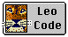

| Home | |
| News | |
| Downloads | |
| Documentation | |
| Screenshots | |
| Online Version | |
| Links | |
| Contribute |
The vb2Py project is developing a suite of conversion tools to aid in translating existing Visual Basic projects into Python.
The conversion includes,
· VB code modules translating to Python code modules
· VB classes to Python classes
|
Translate Now
|

Learn
|

Download
|
The project is also aiming to support translation of VB Script, ASP and VBA code into Python equivalent code. If you have experience in ASP and are interesting in contributing, please get in touch.
· Conversion of VB Forms to PythonCard forms was one of the original goals of the project but this is only marginally working and is unlikely to be completed.
The project roadmap shows where the project
is going and the expected timescales.
| The online conversion is working again after being broken for many years! | |
| Version 0.2.1 Released | |
| Automatic code testing for converted code | |
| vb2Py Online now available |
|  |